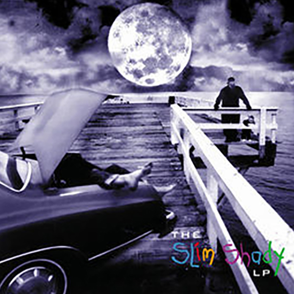
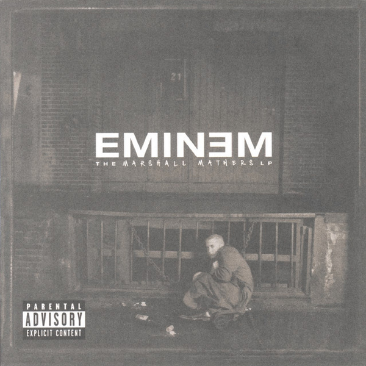
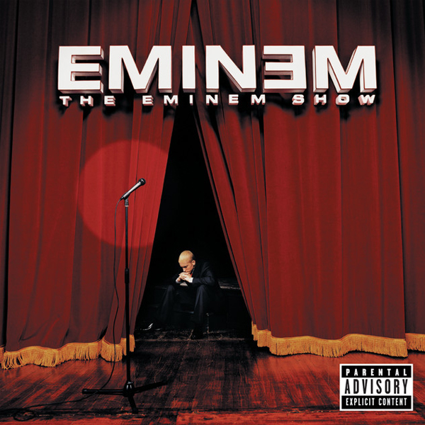
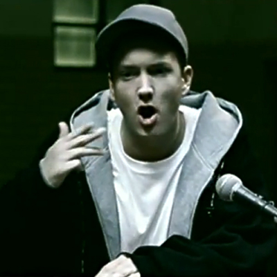
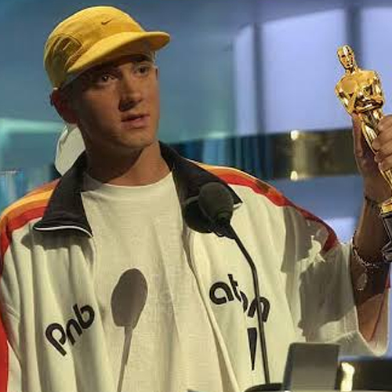

THE ART OF WORDS
เรื่องราวของ Eminem แรปเปอร์ที่เปลี่ยนคำพูดให้กลายเป็นพลัง ผ่านเสียงเพลงและเรื่องราวจากชีวิตจริง
เริ่มสำรวจ01 / ABOUT
Eminem หรือ Marshall Bruce Mathers III เป็นแรปเปอร์ ชาวอเมริกัน เขาเป็นที่รู้จักจากการใช้คำที่รวดเร็ว การเล่นคำ และการเล่าเรื่องจากประสบการณ์ชีวิตของตัวเอง ผลงานของเขามีทั้งความโกรธ ความเจ็บปวด ความฝัน และการต่อสู้เพื่อพิสูจน์ตัวเอง
02 / ALBUMS

1999 · จุดเริ่มต้นของชื่อเสียง

2000 · อัลบั้มที่สร้างกระแสอย่างมาก

2002 · มุมมองต่อชื่อเสียงและชีวิต
2010 · การเริ่มต้นใหม่อีกครั้ง
03 / MY PLAYLIST
เพลงเกี่ยวกับการคว้าโอกาสและเชื่อมั่นในตัวเอง
เพลงที่เล่าถึงความรักและความห่วงใยที่มีต่อลูก
เพลงที่พูดถึงการลุกขึ้นและก้าวต่อไป

เพลงเกี่ยวกับครอบครัวและผลกระทบจากการทำงาน
ACHIEVEMENTS
รางวัลและความสำเร็จที่สะท้อนเส้นทางดนตรีของ Eminem
รางวัลแกรมมี่ 15 ครั้ง จากผลงานเพลงตลอดเส้นทางอาชีพ
ได้รับรางวัลจากเพลง Lose Yourself ในปี 2003

ได้รับการบรรจุชื่อเข้าสู่หอเกียรติยศในปี 2022